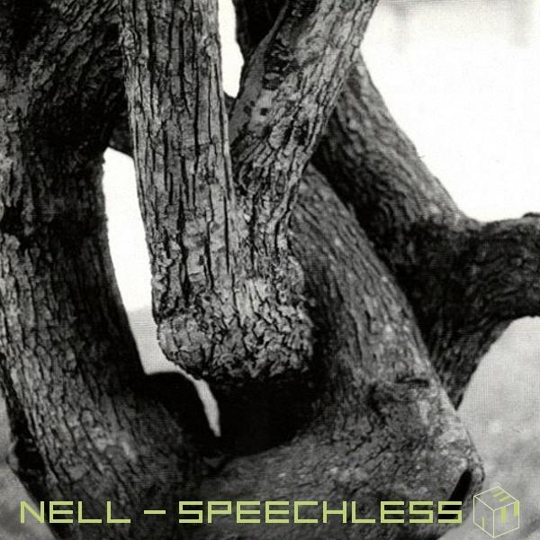

- Reflection of
- Speechless
- Let it Rain
- Walk Through Me
- Healing Process
- Separation Anxiety
- Slip Away
- Newton's Apple
- C
- COLORS IN BLACK
- Moments in between
Speechless

''Speechless''는 2001년 9월 29일 발매된 대한민국의 밴드 넬의 인디 2집 앨범이다.
총 13곡이 수록되어있고 런타임은 60분이다.
수록곡
1. My Reason
2. 조금은 슬픈 이야기
3. 말들어
4. 모래시계
5. 벽
6. 바보천사
7. 차라리 그럴게
8. 낙엽의 비
9. 양의 노래
10. Minus
10. 선택
12. Pay Back
13. 벙어리